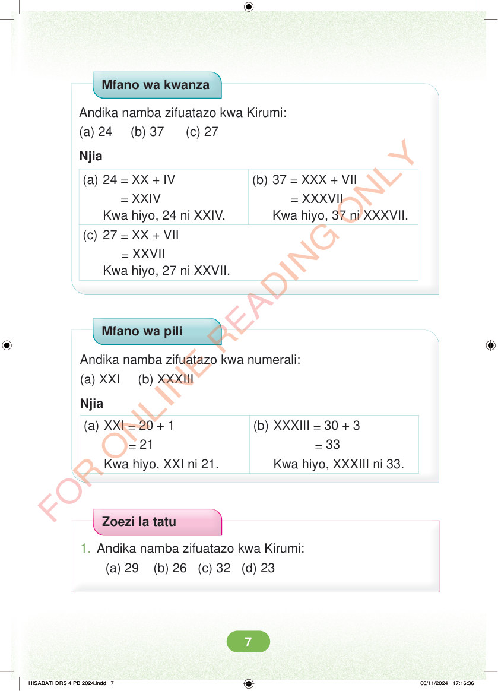

Mfano wa kwanza Andika namba zifuatazo kwa Kirumi: (a) 24 (b) 37 (c) 27 Njia (a) 24 = XX + IV (b) 37 = XXX + VII = XXIV Kwa hiyo, 24 ni XXIV. = XXXVII Kwa hiyo, 37 ni XXXVII. (c) 27 = XX + VII = XXVII Kwa hiyo, 27 ni XXVII. Mfano wa pili Andika namba zifuatazo kwa numerali: (a) XXI (b) XXXIII Njia (a) XXI = 20 + 1 = 21 Kwa hiyo, XXI ni 21. (b) XXXIII = 30 + 3 = 33 Kwa hiyo, XXXIII ni 33. Zoezi la tatu 1. Andika namba zifuatazo kwa Kirumi: (a) 29 (b) 26 (c) 32 (d) 23 HISABATI DRS 4 PB 2024.indd 7 HISABATI DRS 4 PB 2024.indd 7 06/11/2024 17:16:36 06/11/2024 17:16:36